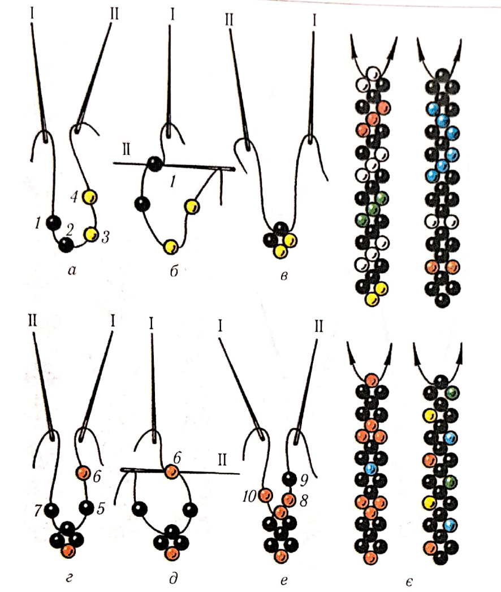
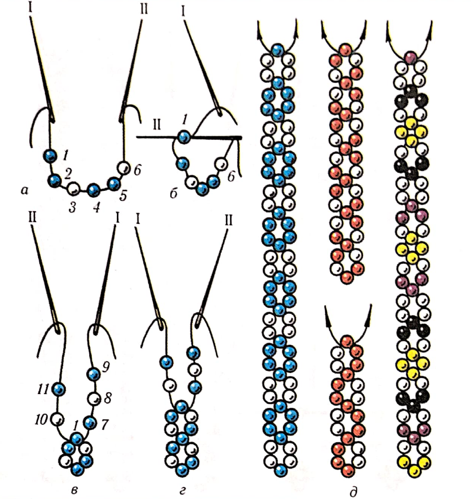
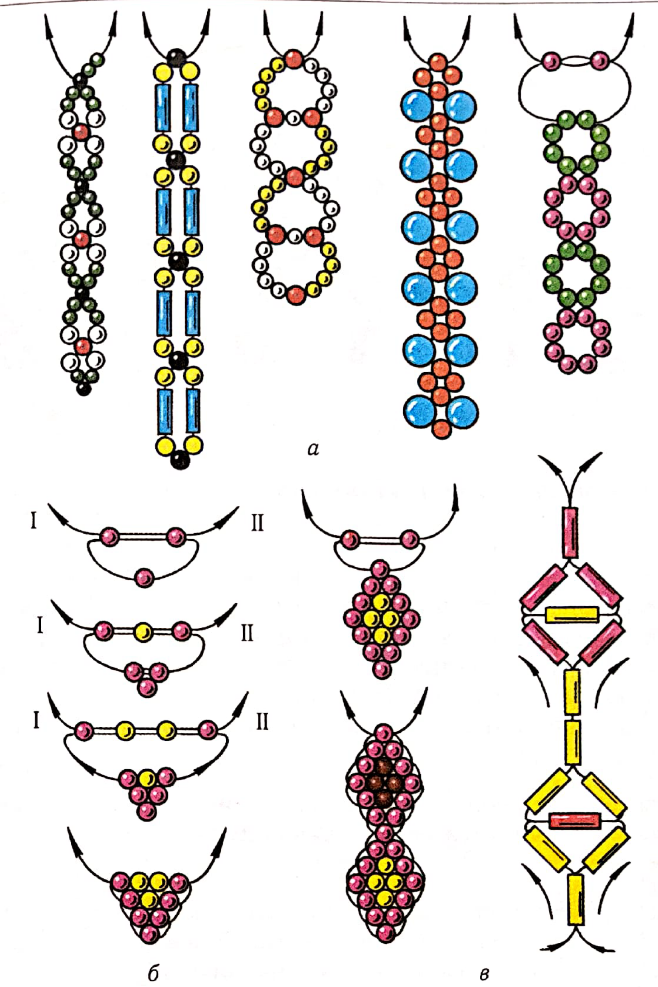
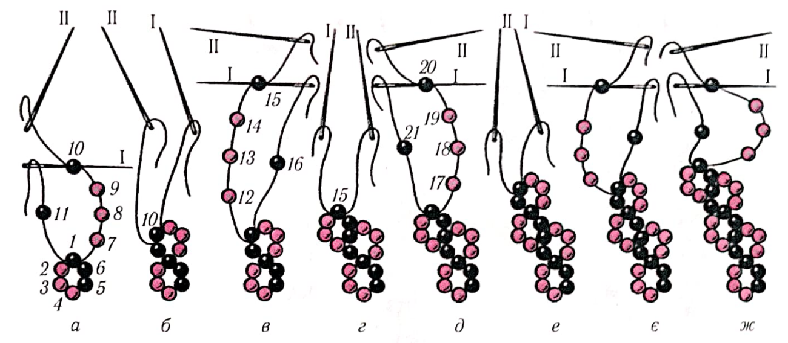
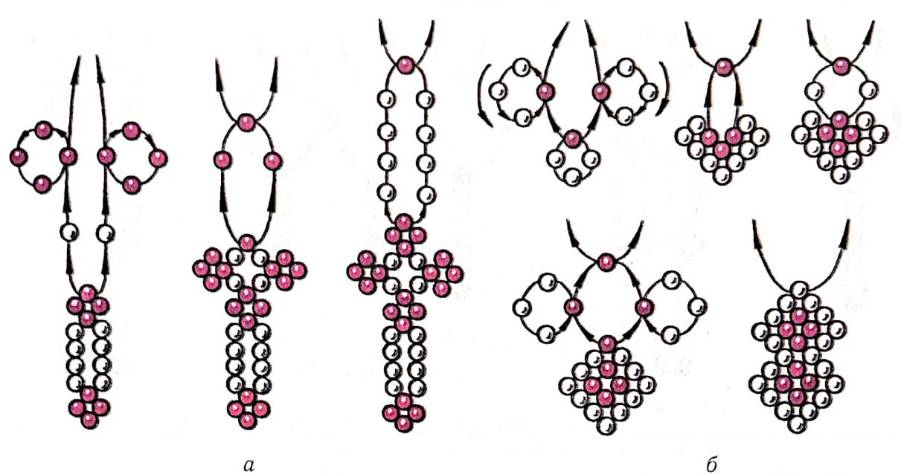
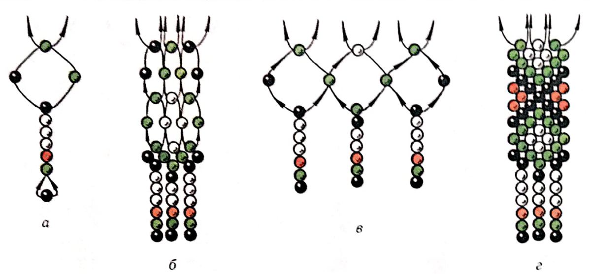
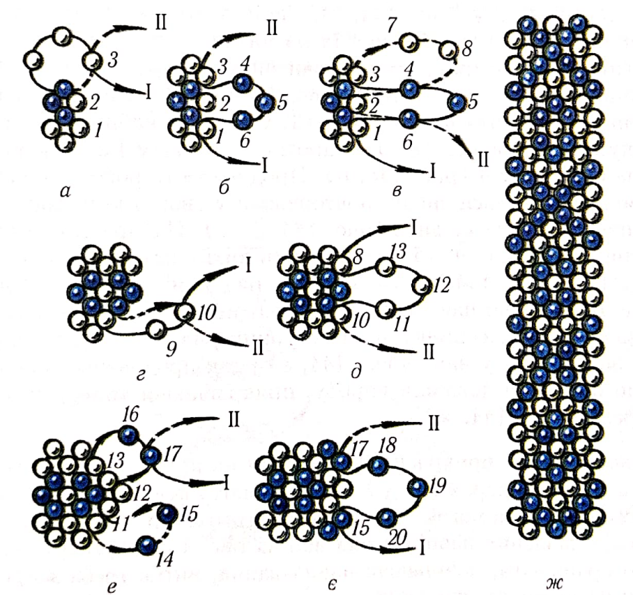

ЛАБОРАТОРНО-ПРАКТИЧНА РОБОТА
Тема: «Ланцюжки на двох нитках»
Мета: »засвоєння техніки нанизування на двох нитках, формування вмінь нанизування виробів з бісеру на двох нитках, виховувати естетичний смак, увагу, повагу та любов до традицій українського народу.
Матеріали та інструменти: бісер різного розміру та кольору, капронові нитки, голки для бісеру.
Порядок виконання роботи:
- Ознайомитись з теоретичними відомостями роботи.
- Виконати завдання практичної роботи.
Теоретичні відомості:
Простий ланцюжок із крупного бісеру можна зробити на двох нитках за допомогою нитки з голками на кінцях (або без голок). Такі ланцюжки прикрашали народний селянський костюм, створюючи намисто з 5-20 ланцюжків різної довжини та узорів. Залежно від призначення ланцюжки можуть бути вузькими і широкими, короткими і довгими, одно- і різнобарвними, одно- і багаторядними.
Практична робота
Виконати вправи:
1.Ланцюжок у хрестик (мал.7.) є першоосновою багатьох селянських прикрас, які нанизували на двох і більше нитках.
Для роботи беруть нитку завдовжки до 1,5 м (тонку капронову вдвоє) з голками на кінцях. Якщо немає тонких голок, то змащують кінці нитки клеєм ПВА, БФ-2 або лаком для нігтів і дають висохнути. Потім нитку навощують і починають виготовлення прикраси.
На середину нитки набирають перший ряд ланцюжка з чотирьох великих бісеринок 1-4 або дрібних намистинок (мал.7,а).Притримують бісеринки великим і вказівним пальцями лівої руки, а правою рукою протягують кінець нитки ІІ у першу бісеринку ряду назустріч нитці І так, щоб нитки схрестилися в намистинці-зв’язці 1 (мал.7,б).Притягують нитки. Тепер голки перебувають по різні боки бісеринки, утворюючи перше кільце ланцюжка у вигляді хрестика (мал.7,в).Потім роблять друге кільце-хрестик: на нитку І набирають дві бісеринки 5, 6, а на нитку ІІ – одну 7 (мал.7,г).Нитку ІІ протягують у другу (останню) бісеринку 6 на нитці І і притягують кінці. Утворилося друге кільце. Так само нанизують третє і всі наступні кільця-хрестики (мал.7,д,е).Кожен раз кінці нитки міняються місцями, але завжди на нитку справа набирають дві бісеринки, а на ліву – одну. 3 різнобарвного бісеру можна виготовити ланцюжки різних візерунків (мал.7, є).

Мал.7. Ланцюжок у хрестик.
2. Ланцюжок кільцями(мал.8) нанизують так: перше кільце з шести бісеринок, а друге й усі наступні– з п’яти, набираючи на праву нитку три, а на ліву – дві бісеринки (мал.8, а-д).
Збільшуючи кількість намистинок у кільці, додаючи намисто і стеклярус, можна зробити безліч різних ланцюжків – від простих (мал.8, а)до складніших, як, наприклад, ромбики,які в народі називають човниками (мал.8, б, в).

Мал.8. Ланцюжок кільцями.

Мал. 9.Варіанти ланцюжків на двох нитках:а-прості; б-човники; в-зі стеклярусу.
3. Ланцюжок дворядний кільцями(мал.10): спочатку роблять кільце з шести намистинок 1-6.Потім набирають друге кільце з п’яти намистинок: на голку ІІ з ниткою-чотири 7-10і одну 11-на голку І. Протягують голку І крізь останню намистинку 10на нитці ІІ (мал. 10, а, б).Для третього кільця набирають чотири намистинки 12-15 на ліву нитку і одну 16– на праву, протягують голку І в останню намистинку 15 на нитці ІІ (мал. 10, в, г).Притягують нитки і набирають четверте кільце та всі наступні за схемою (мал. 10, д-ж).
Такі ланцюжки роблять із дрібних намистинок одного або кількох кольорів, стежачи за відповідним набором їх на нитки.

Мал. 10. Ланцюжок дворядний кільцями.
Способом у хрестикможна нанизувати смужки ланцюжків вузькі й широкі, різної форми, короткі й довгі, одно-й різнобарвні для пояса, бретелей, ґердана (мал.11).
У давнину такі прикраси виготовляли на кількох нитках (одній парі, двох парах і т. д.). Техніку виготовлення пояса утри хрестики за допомогою шести ниток (трьох пар, тобто трьох ниток, складених навпіл) показано на мал.12. Щоб зручніше було працювати, починаючи нанизування, нитки треба закріпити на цвяшках або гачках.
4. Ланцюжок у три хрестики(мал. 13) на двох нитках нанизують з трьох кілець на основі однорядного ланцюжка (див. лабораторна робота № 1). Закінчують однорядний ланцюжок з правого боку останнього кільця у бісеринці 3(мал. 13, а).Протягують нитки і нанизують наступний ряд ланцюжка згори вниз. Для цього набирають на нитку І три бісеринки 4-6і протягують нитку крізь бісеринку 1 першого кільця (мал. 13, б). Притягують нитку І, а на нитку ІІ набирають дві бісеринки 7, 8. Голку ІІ з ниткою протягують крізь бісеринки 4, 2, 6 і притягують нитку (мал. 13, в).Закінчують ряд також двома бісеринками 9, 10,набравши їх на нитку 1. Закріплюють другий ряд хрестиків, протягуючи нитку ІІ крізь останню бісеринку 10(мал. 13, г). Притягують нитки і нанизують наступний ряд знизу вгору голкою І. Спочатку набирають на нитку три бісеринки 11-13 і протягують голку І з ниткою крізь бісеринку 8 (мал. 13, д).Продовжують роботу голкою ІІ, яка залишилася знизу, повторюючи у зворотному порядку нанизування зверху вниз (мал. 13, б-г). Набирають на нитку дві бісеринки 14, 15 і протягують нитку крізь бісеринки 11, 5 і 13 (мал. 13, е).Закінчують ряд угорі двома бісеринками 16 і 17, що нанизані на нитку І, протягуючи нитку ІІ крізь останню бісеринку 17. Наступний ряд (18-20)нанизують знову зверху вниз (мал. 13, є)і так продовжують роботу до потрібної довжини виробу, прикрашаючи кольоровими узорами (мал. 13, ж).

Мал. 11. Ланцюжок в хрестик на двох нитках.

Мал. 12. Послідовність виконання пояса у три хрестики на шести нитках.

Мал. 13. Ланцюжок у три хрестики на двох нитках.
Контрольні питання:
- Яка техніка покладена в основу нанизування ланцюжка у три хрестики?
- Які смужки ланцюжків можна нанизувати способом у хрестик?